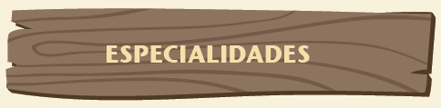
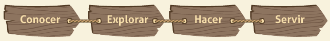
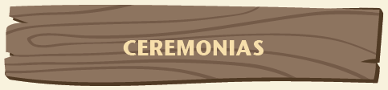
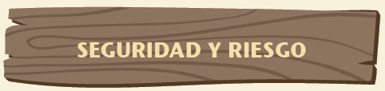
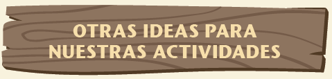

Además de los temas que ya hemos tratado, hay otros que nos interesan por su relación con el Movimiento, porque tienen utilidad en el día a día de nuestra Patrulla o simplemente porque nos gustaría saber de ellos. En las siguientes láminas encontraremos varios de estos temas, algunos de ellos nos servirán para nuestras actividades con nuestras Patrullas y Unidades, e incluso se pueden convertir en un proyecto que hagamos propio. Los temas siguen el siguiente orden: especialidades, ceremonias, seguridad y riesgo, otras actividades para hacer con mi Patrulla y Unidad.
Las especialidades son actividades que hacemos de manera voluntaria y que responden a nuestros intereses personales. La idea es que a través de éstas desarrollemos nuestras habilidades innatas, es decir, aquellas que tenemos desde que nacimos, practiquemos algo que ya nos gusta hacer o aprendamos una afición que nos llame la atención. A través de una especialidad podemos encontrar nuestros gustos y enseñar estos a los demás, esto también es servir.
Cuando queramos desarrollar una especialidad vamos a necesitar ayuda de una persona que sea monitor, quien nos va a apoyar en este proceso. Puede ser una guiadora o dirigente de nuestra Unidad o alguien que tenga capacitación o experiencia en el tema de nuestra especialidad. Una vez que elijamos a alguien como monitor o monitora debemos contarle a nuestras guiadoras o dirigentes.
Al momento de elegir nuestra especialidad nos daremos cuenta de que varias de ellas se pueden agrupar en algo que llamamos Campos de Interés. Son 5:
Además, habrán algunas especialidades que corresponden a más de un campo.
No es necesario que el proceso de una especialidad nos lleve mucho tiempo, de hecho, entre 2 y 3 meses debiésemos finalizar el desarrollo de nuestra especialidad.
Por último, es importante que nuestra especialidad nos lleve a:
Conocer más del tema que nos llevó en un principio a hacer nuestra especialidad.
Explorar y profundizar nuestro interés, descubriendo cosas que antes no sabíamos.
Hacer cosas nuevas, tomar desafíos y aprender algo nuevo.
Servir a los demás a través de lo nuevo que aprendimos, mostrarles a otros algo novedoso y que entusiasme a descubrir cosas nuevas.
Algo que tenemos que mantener presente es que nuestras ceremonias deben ser breves, significativas, dinámicas y propias de quién recibe la ceremonia.
Lo más importante es que somos protagonistas de nuestras ceremonias, en esos momentos se tiene que ver reflejado los gustos e individualidades de la persona de la celebración, conservando la solemnidad propia de la ocasión.
Tampoco olvidemos que todas nuestras ceremonias deben ser seguras para nosotras o nosotros y nuestro entorno. Ninguna ceremonia puede atentar contra nuestra integridad física o psicológica, ni tampoco producir un daño a nuestro ambiente.
Tal como lo vimos en la preparación de actividades, es vital que consideremos medidas de seguridad y prevención para nuestras actividades. Para esto, cuando pensemos en una actividad tenemos que considerar aquellas cosas del ambiente o acciones que podrían resultar en un accidente.
Prevenir es la clave para no tener accidentes porque los evitamos antes de que sucedan. La idea es que saquemos o cambiemos la actividad si algo resulta demasiado riesgoso, si el cambio no es posible (por ejemplo, nuestro lugar para las actividades tiene un escalón donde nos podríamos torcer el pie, pero no podemos irnos a otro lugar ni sacar el escalón) pongamos mucha atención a eso que hace que nuestra actividad sea peligrosa.
Marquémoslo con algo fluorescente, hagamos carteles, asegurémonos de informar a todas y todos para evitar accidentes. Cada cierto tiempo de la actividad recordemos sobre el peligro, para que la diversión continúe sin accidentes.
Por último, y porque aun cuando hagamos todo podría suceder un accidente, estemos listas y listos para ayudar. Si alguna guía o scout tiene un accidente, llamemos inmediatamente a los adultos que nos está acompañando, despejemos el lugar (es típico que todo el mundo se abalanza a ver lo sucedido, evitemos que esto suceda) y sigamos las instrucciones que nos dan nuestros dirigentes o guiadoras.
Desde hace un tiempo que la Asociación ha ido presentando Programas que vienen del Movimiento Scout y Guía a nivel mundial para que las podamos hacer con nuestras Patrullas y Unidades. Acá encontraremos una lista rápida de los programas internacionales que son para guías y scouts, para que les demos un vistazo y nos motivemos con el desafío de participar en uno. Cada Programa tiene un tema específico, desafío e insignias especiales.
Programa Scout Mundial del Medioambiente: Es un set de actividades y proyectos que nos enseñan a implementar prácticas medioambientales apropiadas para todas las especies del planeta y a promover la educación medioambiental. Podemos pedir información al mail:
programamedioambiente@guiasyscoutschile.cl
o a través del Facebook:
Programa Scout Medio Ambiente Chile
Navegación Inteligente: Es un set de actividades con el que aprenderemos sobre seguridad en la web y mantener conexiones positivas y seguras en línea. También conoceremos nuestros derechos como usuarios de Internet. Podemos pedir información al mail:
navegacioninteligente@guiasyscoutschile.cl
o a través del Facebook:
Libre De Ser Quien Soy: Es un programa que busca que derribemos el mito de la imagen del hombre y la mujer perfecta, aumentando nuestra autoestima y confianza en nuestra apariencia física. Podemos pedir información al mail:
libredeserquiensoy@guiasyscoutschile.cl
o a través del Facebook:
Mensajeros de la Paz: Es un programa que promueve que hagamos acciones de servicio o colaboración a la comunidad, donde somos nosotras y nosotros quienes pensamos, diseñamos y ejecutamos nuestros proyectos de servicio. Podemos pedir información al mail:
mensajerosdelapaz@guiasyscoutschile.cl
o a través del Facebook:
Alto a la Violencia: Es un proyecto que busca eliminar la violencia contra las niñas y mujeres de todo el mundo. Nos enseña a unirnos para hacer del planeta un lugar más justo para todas y todos. Podemos pedir información al mail:
altoalaviolencia@guiasyscoutschile.cl
o a través del Facebook:
No nos quedemos fuera: busquemos información, pidámosle a nuestras guiadoras y dirigentes que averigüen
¡Seamos quienes hacen del mundo un lugar mejor!